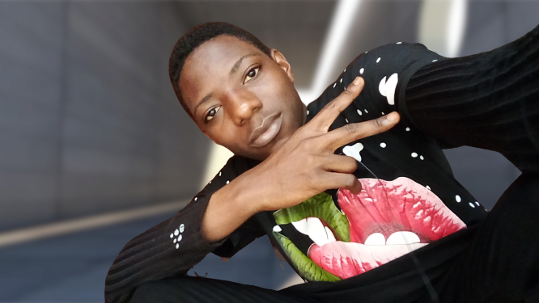

I am the last born of a family of eight children. At the age of nine, I was diagnosed with bone tuberculosis at my backbone, rendering me impaired. Being disabled has been the most difficult challenge I have ever had to face, requiring me to endure hardships such as discrimination, non-consideration of my opinions, and people's unwillingness to interact with me, to name a few.
Indeed these hardships all started in 2012 after I recovered from eighteen months of illness. At a tender age, I felt separated from the world. Due to my precarious health, I was unable to participate in certain activities, which added to the fear I had of being rejected. These circumstances pushed me into becoming an introverted person. Having only the new DELL computer that my sister received from her school as a day-to-day life companion, I decided to dedicate my time to understand the device and make productive use of it. Never did I know I was gradually nourishing my enthusiasm for technology.
I am a tech-enthusiast. Interested and willing to shed a hand, an eye, or an ear on things related to technology. This enthusiasm has led me to engage into a multitude of technology related boot camps and summer training sessions during which I got a real clue on what I was most passionate about and where I could engage and exchange with a variety of people sharing the same interest for technology as I did. My aim/goal in life is to create impact and bring up solutions to problems my community faces by using the facilities given by technology.
As a hobby, I do video editing. I like going through good quality videos and images gotten from a camera, selecting the best ones for a given montage I have in mind. In addition, I love listening to cool music as it gets me both inspired and relaxed.
Though being a hobby, my interest for video editing has brought me some recognition already. Precisely from the president of the TiC Summit and the entire TiC community, where I lead video editing team and I volunteer to help secondary school students, through video tutorial and online follow-up, to develop tech related projects to solve issues they identify in their community.
So long as I remember, I have always been interested in solving problems. This had a positive influence on my studies for I excel in all subject especially those in which calculations and problems where most common. Years ago, after my first encounter with a computer, I literally fell in love with the device. I learned more about computer and I became a passionate of technology. After participating to computer related boot camps, I discovered that my interest in solving problems and my enthusiasm for computer science could all be materialised into a joined field and I became a passionate of computer engineering/computer sciences; a major through which my problem solving interest/mind-set and my love for computer science can be fully exploited.
